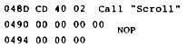
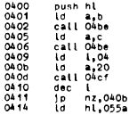

Nascom Journal |
6/80 7/80 |
„Einfach“ deshalb, weil der Disassembler nicht alle Z80-Befehle erkennt. So fehlen z.B. die „Bit“-Befehle und die, welche mit den Index-Registern zu tun haben. Dafür kann das Programm relative Sprünge ausrechnen und druckt beim Auftauchen des Restart Befehls „EF“ das zugehörige Datenstring aus. Mehr war beim besten Willen nicht auf einem Speicherplatz von 1k unterzubringen, zumal noch eine Subroutine enthalten ist, die ASCII in Baudot Code für Fernschreiber umsetzt.
Dieses Fernschreiberprogramm beginnt bei 0757 und läßt sich für Systeme, die keinen Fernschreiber über UART naschließen können leicht folgendermaßen umschreiben:
0757 CD 3B 01 C9 Call CRT Return
Zusätzlich muß eine Programmstelle umgeschrieben werden, die für den Fernschreiber Carriage Return und Line Feed ausgibt:
07F9 muß von C7 (Restart 0) auf 76 (Halt) geändert worden.
Damit ist der Disassembler für jedes Nascom 1 System verwendbar.
Das Programm benötigt den Speicherbereich 0400 bis 07FF. Es kann in einem EPROM 2708 im freien EPROM Sockel gespeichert sein, oder man benutzt ein 1k Static RAM MK 4118 als Speichererweiterung, wie an anderer Stelle beschrieben. Gestartet wird das Programm mit E07E3. Dann drückt man die „A“ Taste und gibt wie gewohnt Anfangs- und Endadresse des Programms ein, das disassembliert werden soll. Dann New Line. Vorsicht bei Bildschirmausgabe: Es können hier nur max. 15 Programmzeilen sichtbar gemacht werden. Erkennt das Programm einen Befehl nicht, wird bei TTY Betrieb □ ausgedruckt, auf dem Bildschirm erscheint das $ Zeichen.
Hier als kleine Kostprobe den Anfang des Disassemblers, auf einem alten Lorenz Fernschreiber ausgegeben.

Günter Böhm, _________________ ____
__ Karlsruhe __
Tel.: ____/______
nach dem Einschalten oder Reset: CC00 C01 4400
Die 4400 gelten für 16k, beim N1 ohne Erweiterung: 400
Funktionsweise:
Da nach Reset in C00 00 steht, wird durch den Kipierbefehl der gesamte Speicherbereich auf 00 gesetzt. Anschließend führt der Monitor automatisch E 0000 aus.
Anwendung:
wichtig beim Arbeiten mit Assembler, wenn dort DEFS verwendet wird.
Der Assembler überspringt nämlich den mit DEFS ausgesparten Speicherbereich, d.h. falls dort vom Einschalten her noch zufällige Bytes stehen, so bleiben sie boshafterweise auch erhalten und führen später zum Absturz des assemblierten Programmes.
| Seite 28 von 52 |
|---|